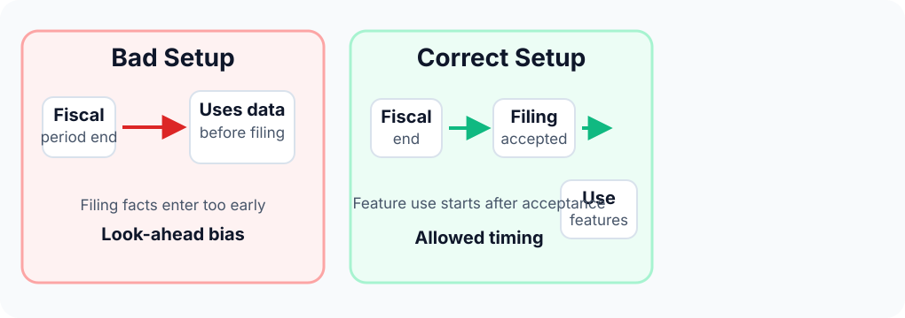
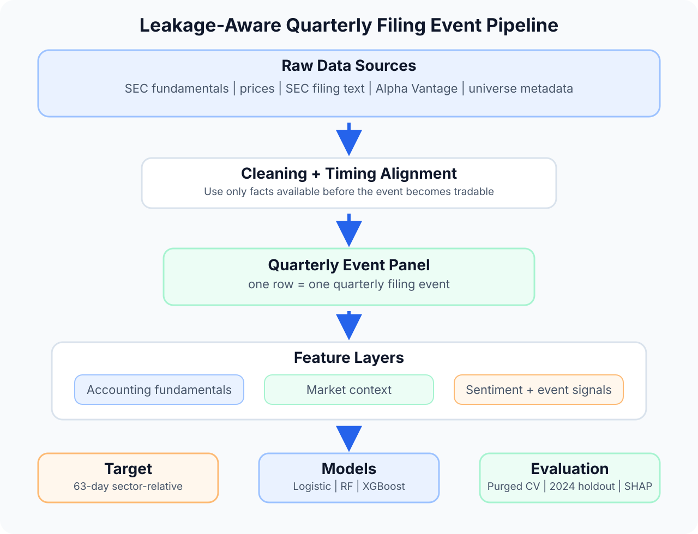
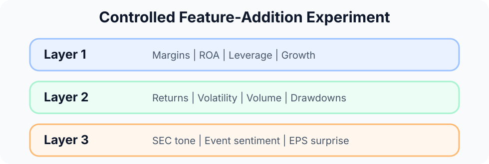
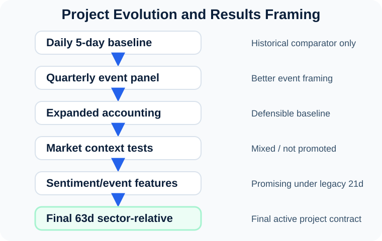
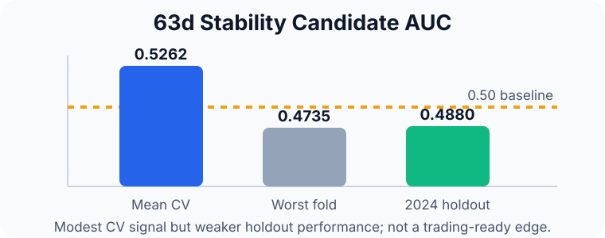

Sentiment-Augmented Quarterly Stock Prediction
A leakage-aware supervised learning pipeline for predicting 63-day sector-relative stock performance after quarterly filing events
Thesis: This project tests whether accounting fundamentals, market context, and sentiment/event-specific features can predict whether a stock will outperform its sector after a quarterly filing event.
Why This Problem Is Difficult
Financial prediction is noisy and vulnerable to look-ahead bias. A model can appear predictive if it accidentally uses information that would not have been available at the time.
- No random train/test splits.
- No future information in features.
- Labels must not overlap validation windows.
Leakage Control

Research Question
Can a machine learning model predict whether a company will outperform its sector over the next 63 trading days after a quarterly filing event?
Do sentiment and event-specific features add predictive value beyond fundamentals and market context?
Data Sources
| Source | Role |
|---|---|
| SEC EDGAR | Fundamentals & text |
| Market prices | Returns & volatility |
| Alpha Vantage | EPS surprise, revisions |
| Capital IQ | Sector context |
Modeling Pipeline

Feature Design

Target
Algorithms Compared
- Logistic Regression (Baseline)
- Random Forest (Nonlinear)
- XGBoost (Boosted trees)
Event Timing & Validation

Features become usable only after the filing/event is tradable.

Purged expanding-window CV with fixed 2024 holdout.
What the Experiments Showed

The strongest sentiment result comes from a legacy 21-day benchmark; the final contract uses the stricter 63-day sector-relative target.
Selected Benchmark Evidence
63d Stability Candidate
XGBoost | CV AUC: 0.5262 | Holdout: 0.4880
Legacy 21d Sentiment
Random Forest | Holdout AUC: 0.5367
Legacy 21d benchmark, not final 63d contract.


Main Findings
- Quarterly filing events are a better modeling unit than daily stock rows.
- Leakage control is central to the project.
- Fundamentals created a defensible baseline.
- Generic market features did not consistently improve results.
- Event-specific sentiment was the most promising incremental signal.
Conclusion & Next Steps
This is not a finished trading strategy. It is a leakage-aware research framework for testing whether financial signals add predictive value around quarterly filing events.
Next: Complete the final 63d rerun, improve data quality, expand event-specific sentiment, and defer portfolio construction until signal stability improves.